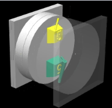

Erkut Yapýcýoðlu
Gazi Üniv. Teknik Eðitim Fakültesi, Teknik Okullar
Aralýk 2005, Ankara
Not: Orijinal olarak TurkCADCAM.net Dergisi 2. Sayýsý için hazýrlanmýþ bu makale, Mayýs 2007'de TurkCADCAM.net Portalý'nda yayýnlanmýþtýr.
1. Giriþ:
Zaman ilerledikçe yoðun rekabet ortamý insanlarý üretimin maliyetini, ayný zamanda kaliteyi arttýrma yollarýný bulmaya yöneltmiþtir. Üretim, kalýpla baþladýðýna göre maliyeti düþürme ve kaliteyi arttýrma yollarý kalýptan geçer.
Bu makalede "ko enjeksiyon nedir?" sorusuna çok net cevap bulacaðýnýzý umuyorum. Kýsaca birden çok bileþeni tek kalýpta kalýplama yöntemidir. Bilinen kalýp mantýðýyla bazý farklýlýklarý vardýr. En büyük farklýlýklar kalýptaki yolluk konumlarý ve makinelerdedir. Ko enjeksiyon kalýplarý parçanýn tasarýmýna göre iki þekilde üretim yapar. Bunlar döner tabla ve "core back" yöntemleridir. Döner tabla presin hareketli kýsmýnýn dönmesiyle olur. "Core back" yöntemi ise çekirdek ve yüzey katmanlarýnýn farklý malzemelerden üretilmesi anlamýna gelir. Þüphesiz ki bu yöntemlerin faydalarý oldukça fazladýr.
Ko enjeksiyon kalýplarýyla üretim yapabilmek için kullanacaðýmýz enjeksiyon makinelerinde enjekte edeceðimiz renk yada plastik sayýsý kadar ekstrüder olmasý gereklidir. Her plastik farklý bir ocakta eritilip kalýba enjekte edilir. Ko enjeksiyon konusunu aþaðýda daha detaylý olarak incelemeye baþlayalým;
2. Ko Enjeksiyon:
Ko enjeksiyon diðer adýyla birden çok bileþenli enjeksiyon kalýplarý demektir. Ko enjeksiyon en kýsa tanýmýyla, birden çok renk yada farklý malzemelerden oluþan parçanýn tek kalýpta kalýplanmasý tekniðidir. Ko enjeksiyon tekniði ilk olarak 1967 yýlýnda Ýngiltere'de ICI firmasý tarafýndan geliþtirilmiþtir. Bütün sektörlerde kullanýlmaktadýr. Ko enjeksiyon tekniðinin bir çok faydasý vardýr. ancak Türkiye'de kullanýmý çok düþüktür.
Þekil 2.1 Ko enjeksiyon tekniði ile üretilmiþ parça örnekleri. (4)
2.1 Ko enjeksiyonun yararlarý ve uygulama alanlarý
. Parça aðýrlýðýný düþürmek için,
. Ses yalýtýmýný saðlamak için,
. Fiziksel özellikleri iyileþtirmek için,
. Maliyeti düþürmek için,
. Yüzey kalitesi yüksek parçalar için,
. Yüksek kuvvetlere dayanýklý parçalar için,
. Bir çok özelliði ayný anda verebilmek için,
. Estetiði arttýrmak için,
. Soðuma süresini azaltmak için,
. Geri kazanýlmýþ plastik parçalar parça çekirdeðinde kullanýlýr.
. Hurdaya çýkmýþ parçalar eritilerek çekirdekte kullanýlabildiði için çevre dostudur. (6)
2.2. Ko enjeksiyon parçalarýnýn kalýplanma teknikleri
Ko enjeksiyon parçalarýnýn kalýplanmasýnda iki teknik uygulanýr. Bunlar döner tabla ve core - back teknikleridir. Parçanýn hangi teknikle üretileceði parçanýn tasarýmý ile alakalýdýr. Ýki yöntemde farklý amaçlara hizmet eder. (1) (6)
2.3. Döner tabla yöntemi:
Bu yöntemin kullanýlabilmesi için parça tasarýmýnýn aþaðýdaki gibi ya da benzeri olmasý gereklidir. Bu yöntem genelde farklý renklerin basýlmasýnda kullanýlýr.
Þekil 2.2. Farklý renklerden oluþmuþ bir parça (6)
Döner tabla yönteminde kullanýlacak enjeksiyon makinesi parçadaki renk ya da farklý bileþen sayýsý kadar ekstrüdere sahiptir. Her bileþen ayrý eksrüderden kalýp boþluðuna enjekte edilir.
Kalýpta hareketli taraflar ayný tasarlanýr. Ancak sabit taraf tasarlanýrken profile göre deðiþik tasarlanmak zorundadýr. Yukarýdaki parçayý ele alacak olursak kalýbýn bir gözünde kýrmýzý renk ve diðer tarafýnda gri renk basýlacaktýr. Kýrmýzý renk plastiðin kendi sýnýrlarýný aþmamasý için sýnýrlayýcýlar tasarlanýr.
2.4. Döner tabla sisteminin çalýþmasý aþaðýda þekilde daha net anlaþýlacaktýr.

Þekil 2.3. Sarý parça basýlmýþ durumda (4)
|
 |
Þekil 2.4. az önce sarý renk basýlan parçanýn üstüne yeþil renk enjekte ediliyor (4) |
Þekil 2.5. Yeþil renkten sonra yolluklar çýkarýlýyor. (4) |
|
|
Þekil 2.6. Yeþil renk parça kalýptan dýþarý itiliyor. (4) |
Þekil 2.7. Tabla dönerek sarý parçanýn olduðu göz yeþil rengi enjekte eden yolluðu karþýlýyor. (4) |
2.5. Döner tabla yöntemini uygulama yeteneðine sahip makinelerden örnekler.
Þekil 2.8. Ýki bileþenli makine (4)
Þekil 2.9. Üç bileþenli makine (4)
Þekil 2.10. Dört bileþenli makine (4)
2.6. Core back (çekirdek malzeme) yöntemi.
Core back yönteminde yüzey ve çekirdek adýnda iki bileþen vardýr. Bu yöntemi uygulamak için gerekli makinelerde ekstüruder sayýsý iki tane olmalýdýr. Ancak bu yöntemde iki malzemede ayný yolluktan enjekte edilir. Ýlk olarak yüzey kýsmýný oluþturacak malzeme kalýp boþluðuna enjekte edilir. Ancak kalýp boþluðu dolana kadar enjekte edilmez. Daha sonra çekirdek dediðimiz kýsmý oluþturacak plastik enjekte edilir. Çekirdek kýsmýný oluþturacak plastik az önce basýlmýþ olan yüzey kýsmýný basýnç altýnda ileriye doðru iterek kalýbýn çeperlerini sarmasýný saðlar. (6) (7)
Þekil 2.11. Core back yönteminin kalýp içindeki görünüþü. (4)
2.7. Ko enjeksiyon tekniði ile üretilmiþ parçanýn kesiti.
Þekil 2.12. Parça kesiti (8)
2.8. Core back yönteminin uygulanabilmesi için makineler.
Bu yöntemde makinenin ekstüruderleri plastiði tek bir enjeksiyon memesine iletirler. Ve farklý plastikler tek memeden kalýp boþluðuna iletilir. Bu tek enjeksiyon memesinin içinde pnomatik olarak çalýþan bir kapatma parçasý vardýr. makine üzerinden hangi plastiðin ne kadar süre ile enjekte edileceði ayarlandýktan sonra pnomatik sistem sadece istediðimiz plastiðin giriþine müsaade eder. Bu makinelerde her ekstüruder için ayarlar tek yapýlabilmektedir. Ýstediðimiz plastiði istediðimiz basýnçta istediðimiz süre boyunca enjekte edebiliriz. Hepsi için ayrý ütüleme basýnçlarý belirleyebiliriz. (4) (7)
Þekil 2.13. Core back yöntemi için uygun makineden örnek (7)
2.9. Ko Enjeksiyonda kullanýlan plastik malzemeler
Ko enjeksiyonda kullanýlan malzemeler arasýnda kimyasal olarak bað oluþmak zorundadýr. Birbirinden farklý iki malzeme bað kurup birbirine yapýþmalýdýr. Her malzeme birbirine bað kuramaz ve yapýþamaz. Bu teknikte malzeme seçimi çok önemlidir. Ko enjeksiyonun faydalarýndan biri de maliyeti düþürmek olduðu için örnek olarak yüzey kalitesi önemli olan bir parçada yüzeyde kaliteli malzeme kullanýrýz fakat çekirdek önemli olmadýðý için ucuz plastik kullanmak avantajlý olacaktýr. Ýþte kullanacaðýmýz bu plastikler arasýndaki bað plastik seçimini etkiler. Aþaðýdaki tabloda plastik malzemeler arasýnda baðlar görülmektedir.(1) (9)
Tablo 2.1. Plastikler arasýndaki baðlar (9)
3.
Sonuç ve Ýrdeleme
Ko enjeksiyon kalýplarýnýn imalatý zor ve kalýplanmasý için gerekli olan enjeksiyon makineleri pahalý olmasýna karþýlýk saðladýðý birçok yarar ile bu eksileri artýya çevirmektedir.
Ko enjeksiyon kalýplarýnýn üretilmesi karýþýk yolluk sistemleri, yolluðun giriþ yeri seçimi, sabit grup tasarýmý bilinen enjeksiyon kalýplarýna oranla çok daha zordur. bu tip kalýplarýn üretimi ülkemizde ciddi anlamda yapýlmamaktadýr ancak kalýplarý yurtdýþýnda yaptýrýp enjeksiyon kýsmýnýn ülkemizde yapýlmasý söz konusudur.
Ko enjeksiyon tekniði ile tek makinede iki iþi yapabiliriz, hurda parçalar tekrar eritilerek parçalarýn çekirdek olarak tabir ettiðimiz iç kýsýmlarýnda kullanabiliriz. Ürettiðimiz parçalarda birçok özelliði ayný anda saðlayabiliriz. Ses yalýtýmýný saðlamak amaçlý çekirdek kýsmýnýn malzemesini belirleyebiliriz. Ve bunun gibi birçok faydasý bulunmaktadýr.
Geliþen teknolojiyi yakýndan takip edip ülkemizin adýnýn ilk sýralarda olmasý için biz teknik elemanlara çok büyük iþ düþmektedir. Umarým bu tez çalýþmasý sizlere faydalý olur. Dolayýsýyla ülkemiz ekonomisine katký saðlamýþ oluruz.
Kaynaklar
1. YAPICIOÐLU Yücel, FARBA A.Þ Plastik üretim usta baþý ve kalýp baðlama amiri. Sarý Cad. Bursa Organize Sanayi Caddesi Nilüfer/Bursa
2. Kortec www.kortec.com
3. Presma www.presma.com
4. Arburg www.arburg.com
5. YALÇIN Erol, Farba plastik mühendisi.
6. Mark E. Milacron, sales asistance
7. Battenfeld, www.battenfeld.com
8. Plastikler, John wiley Fundamentals of modern manufacturing thesis
9. Engel combimelt, www.engelmachinery.com |